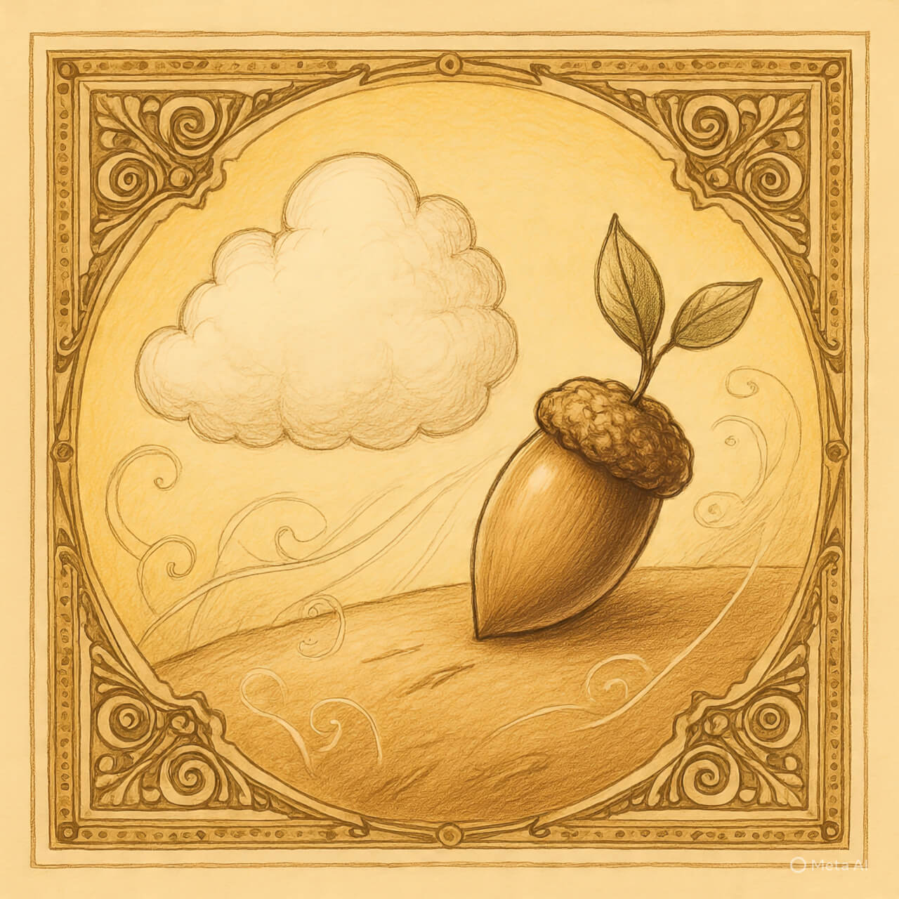

🌱 La Graine et le Nuage

Dans une terre sèche et craquelée, une petite graine dormait sous la poussière. Elle ne savait rien du monde, sinon qu’un jour, elle pousserait. Au-dessus d’elle, les nuages passaient. Mais aucun ne s’arrêtait. — Nuage, souffla la graine, quand viendras-tu ? Le nuage blanc entendit, mais il était jeune lui aussi. Il ne savait pas pleuvoir. — Patiente un peu, dit-il. Je reviendrai quand je serai prêt. Les jours passèrent. Le soleil brûlait. La graine rêvait d’eau et d’ombre. Elle faillit abandonner. Mais un soir, le vent souffla doucement, et dans le ciel revint le nuage. Il était devenu lourd et gris. Il s’approcha, tout doucement, et murmura : — Me revoilà , petite sœur. Puis il pleura. Et chaque larme faisait danser la poussière. La graine frissonna. Et dans le silence mouillé, elle grandit. Depuis ce jour, la graine devenue plante lève ses feuilles vers le ciel — et chaque fois qu’un nuage passe, elle lui sourit. Fin.